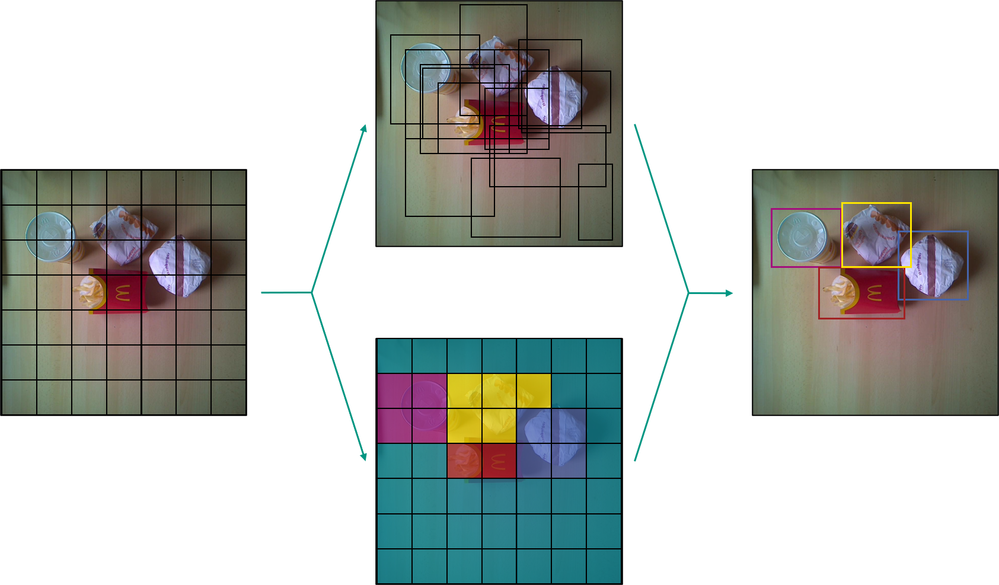
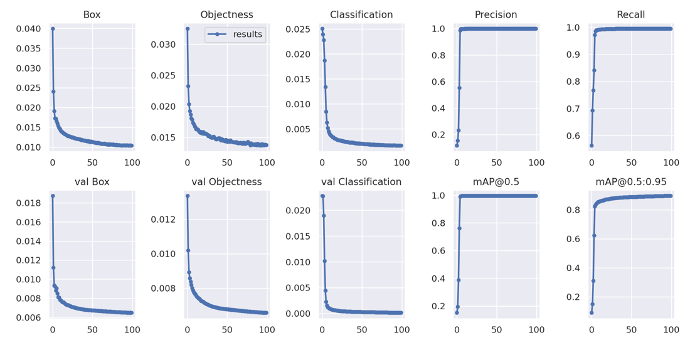
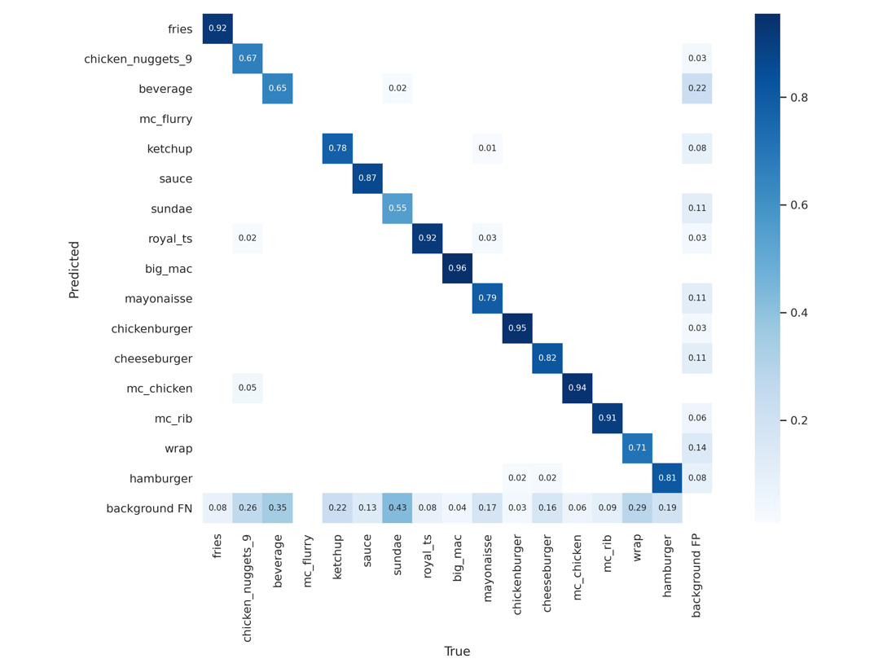
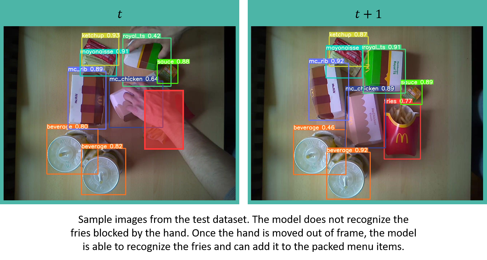

Model
Computer vision challenges were initially posed by simple geometric body detections - tasks for which neural networks were not necessarily needed. Due to the trend with increasing availability of computing power and the establishment of Convolutional Neural Networks (CNNs), neural networks in general, but especially CNNs in the domain Computer Vision have gained publicity due to very good results. For this reason, we decided to master our object detection using such neural networks - available in the manner of open source in different model architectures.
Model Architectures
Since the requirements from the course are an object detection in real-time on a Jetson Nano, we had to look for rather small neural network architectures that perform high FPS rates (frames per second) on relatively low processing power. For our use-case, real-time meant to be a smooth detection at at least 8 FPS. The following figure shows different model architectures deployed with NVIDIA's TensorRT accelerator library on a Jetson Nano.

After further research, we decided either a model architecture from the Tensorflow Object Detection API or a YOLO architecture implemented with a widespread machine learning library like PyTorch would be the perfect fit, since both are very well documented, and lack of time is one of our biggest challenges.
With both libraries as possible solutions, we created training pipelines to test several model architectures, such as the "SSD Mobilenet-V2" from the Tensorflow Model Zoo, or a YOLOv4-CSP and evaluate their performance.
Finally, we did not compare the performance of different YOLO model architectures with models from the Tensorflow Model-Zoo, because we decided to use Nvidia's DeepStream library, which integrates particularly well with YOLO architectures, for inference on the Jetson Nano.
YOLO Architecture
YOLO, an abbreviation for the term "You Only Look Once", is a model architecture for object detection, employing CNNs to detect in real-time. As the name indicates YOLO architectures are single-stage object detectors.
In general, the architecture uses three techniques to achieve accurate results with minimal error and a real-time detection.
Residual Blocks:
The input-image is divided into grids of a quadratic dimension. Every
grid-cell will detect objects that appear within them.
Bounding Box Regression:
The Bounding Box, as the rectangle outline of an object in an image,
consists of height and width, relative x and y center position and the
item-class. YOLO uses a single regression to align all Bounding Box
factors.
Intersection over Union (IOU):
IOU is used by the YOLO architecture to provide a bounding box that fits
the object perfectly. Each grid-cell is responsible for predicting the
bounding box with its confidence score.

The above figure shows how the three techniques are applied to produce the final object detection results.
YOLO Model Comparison
The DeepStream-based inference solution we built for the QSROA supports the deployment of most common YOLO architectures with very little reconfiguration effort. In order to further streamline our development process, we decided to use a model supported by the DeepStream-Yolo project. As a result, we had several architectures from which we could choose the best-suited model according to use case and hardware restrictions.
-
-
available in various sizes
-
implements CSP Bottleneck like YOLOv4-CSP
-
-
YOLOv4x-Mish
-
YOLOv4-CSP (Scaled/ Cross-Stage Partial Networks)
-
code has some unknown issues with reproducing paper performance
-
CSP architecture reduces inference computation
-
-
YOLOv4
- in general, we can say YOLOv4 is an improvement to YOLOv3
-
YOLOv4-Tiny
-
reduced network size compared to YOLOv4
-
Faster prediction but less accuracy
-
-
YOLOv3-SPP (Spatial Pyramid Pooling)
- useful especially for networks that have many different input image sizes - therefore a not necessary architecture for us
-
YOLOv3
-
YOLOv3-Tiny-PRN (Partial Residual Networks)
-
has a more stable performance than YOLOv3-Tiny
-
better FPS rate than YOLO-Tiny
-
-
YOLOv3-Tiny
-
YOLOv3-Lite
-
YOLOv3-Nano
-
YOLO-Fastest
-
YOLO-Fastest-XL
-
YOLOv2
-
YOLOv2-Tiny
Our selection is based on detection performance, speed (FPS) and scalability. By scalability, we refer to the ability to scale a model in size without requiring major changes to the model architecture. After evaluating several model architectures we decided to have a deeper comparison of the YOLOv4-CSP and YOLOv5s. Therefore, we balanced the pros and contra of both models.
| YOLOv4-CSP | Pro: | Contra: |
|---|---|---|
| Research Paper available | Low FPS (3.9FPS) or image-stutter | |
| High mAP | Possible overfitting because of synthetic data | |
| Native convert. | Code has some unknown issues with reproducing paper performance |
The following video is a YOLOv4-CSP trained on the COCO2017 Dataset deployed on the Jetson Nano. Without the 5 skip frames that we apply, we achieve a 3.9 FPS-rate in average on the Jetson Nano, which visualized looks like a stutter from frame to frame.
| YOLOv5s | Pro: | Contra: |
|---|---|---|
| High FPS (12FPS) | No paper available | |
| Potentially less overfitting | "non-transparent" python code | |
| Fast training time | ||
| Less memory usage | ||
| Performance reserve because of less memory usage |
This video shows the YOLOv5s trained on the COCO2017 Dataset, also deployed on the Jetson Nano, without any stutter (1 skip frame; 13 FPS), but as you can see with a slightly worse detection performance than the YOLOv4-CSP.
After a long evaluation and weighing up various characteristics we decided YOLOv5s (Release 5.0), the smallest YOLOv5 model would be the most suitable one for our use case. Especially due to the high scalability and fast training time - both properties that fit very well to the adaptivity of our approach of the synthetic dataset to changing conditions and thus perfectly match the high flexibility we approach to e.g. sessional changes described in the business plan.
About YOLOv5(s)
YOLOv5 is a GitHub project developed and maintained by the artificial intelligence startup Ultralytics. The project describes itself as a family of object detection architectures and models pretrained on the COCO dataset. While as of now there is no research paper available, it can still be seen as an unofficial successor to YOLOv3 as it incorporates various architectural advancements and new data augmentation techniques for training such as mosaic augmentation. The project is under active development and since the original release in June of 2020, the architecture was updated multiple times to further improve performance. Contrary to the original YOLO, YOLOv5 is implemented using the popular PyTorch framework.
YOLOv5 is available in four different sizes. The different sizes with corresponding characteristics are listed in the following table.
| Model | Size (MB) | FPS-rate (ms) | mAP (COCO) |
|---|---|---|---|
| YOLOv5s | 14 | 2.0 | 37.2 |
| YOLOv5m | 41 | 2.7 | 44.5 |
| YOLOv5l | 90 | 3.8 | 48.2 |
| YOLOv5x | 168 | 6.1 | 50.4 |
Since the characteristics of the smallest model (YOLOv5s) fit our requirements regarding detection speed and size very well, we will focus more on its technical details in the following (the other listed versions only differ slightly in model layers and number of parameters).
The YOLOv5s, due to its single-stage object detection characteristic also consists of three main parts. To extract important features from the input image the model backbone is a Cross Stage Partial network (CSP). For better model generalization the model neck is used to generate feature pyramids like the PANet. The final detection is done in the model head. Bounding Boxes, class probabilities, output vector and the objectness scores are generated on the given features.
Training-Pipeline PyTorch YOLOv5s
The programmed python script is designed to run on the BWUniCluster because Image-Processing requires high processing power which is often limited on personal computers. With limitations on Google Colab like restricting training time and computing power, we decided to use the Cluster instead.
The script used for training can be found under ./model/train/start.sh.
It is a simple shell script executing the training scripts found in the
repository of the original Yolov5 model. To run the training, place the
start.sh script inside a clone of the Yolov5 repository:
https://github.com/ultralytics/yolov5
Make sure the --data parameter links to the right dataset. In our
case the synthetic dataset we used for training:
https://drive.google.com/file/d/116fG7o5RiESG0x1h3kxuD69LcGa73jym/view?usp=sharing
Executing the script will train a model from pretrained weights. Since we used a total of 4 GPUs on the cluster, the distributed launch parameter is enabled. Adapt this parameter according to the resources you have available. If your GPU runs out of memory, decrease the batch size to a size that works with your setup.
After training, the script converts the model into TensorRT format. This ensures optimal performance when deploying the model to the Jetson Nano.
Statistics about your training run can be found in the newly created
./runs/train folder.
Results
The model was trained for 100 epochs on synthetic data only. For training the 'finetuning' hyperparameters provided by YOLOv5s were used.
The model was not trained from scratch but from weights provided by YOLOv5s. These weights were pretrained on the COCO dataset. Overall, the training took just over 8 hours on 4 Nvidia Tesla V100 GPUs.
While convergence on the validation data could be observed around the 80 epochs mark, some further hyperparameter tuning might further increase model performance.

After 100 epochs the model performs very well on the validation dataset. Keep in mind that the validation dataset consists of only synthetic data as well. Surprisingly despite some heavy regularization the model still achieves very high accuracies. In many cases, the regularization techniques are so intense that recognizing all items in the images is challenging even to humans. The model seems to achieve similar or even performance than a human would on the synthetic dataset.

The final performance of the model was evaluated on a test dataset - introduced in the dataset-section never seen before by the model. In contrast to the validation dataset, the test dataset consists of real images only.
Keep in mind that the test data contains highly complex data, as explained in the dataset section. The performance figures here therefore should be considered as a lower bound rather than a final model performance.
Generally, the model recognized all the classes in the test dataset with high accuracy. As expected, the confusion matrix shows the highest accuracy in larger item-classes with very distinct features, such as the packaging of Big Macs and the McChicken.
Problems are found with products that naturally change depending on the environment as well as between products. A good example is the low accuracy of sundaes. Sundaes come in a variety of different dessert sauces, each one stirred slightly different into the ice cream, making every sundae look unique. Additionally, ice cream tends to melt rather quickly, so when capturing images for the test dataset the appearance will change continuously. While this was a challenge for us, it is less critical for real life situations in the restaurant, as the ice is freshly prepared.
The high accuracy achieved on recognizing fries shows that these issues can be overcome with more training data. While fries have a high variability within their class, we could create a relatively large amount of training data for them by simply rearranging the fries. This seems to have greatly increased models' understanding. Our hypothesis is that with a sufficiently large amount of training data these issues could also be overcome for other classes.

When investigating the models' results, the model seemed to have issues with items being partly out of frame or overlapped by other items. This is especially the case when moving items into the frame or out of the frame. While this issue will decrease the prediction accuracy of the model on our test dataset, in a real world application this has little to no significance. Since the system is observing a continuous stream of images, missing the item for a couple of frames while it is being moved into frame or blocked partially by a hand should not have any consequences. In many cases, the model will be able to recognize the item once it's fully in frame, and the logic we implemented in the backend of our system is able to filter for items that disappear for single frames or are falsely recognized for short time. By averaging over a longer timeframe, we can greatly reduce the models' false recognitions, as illustrated in the following figure.
